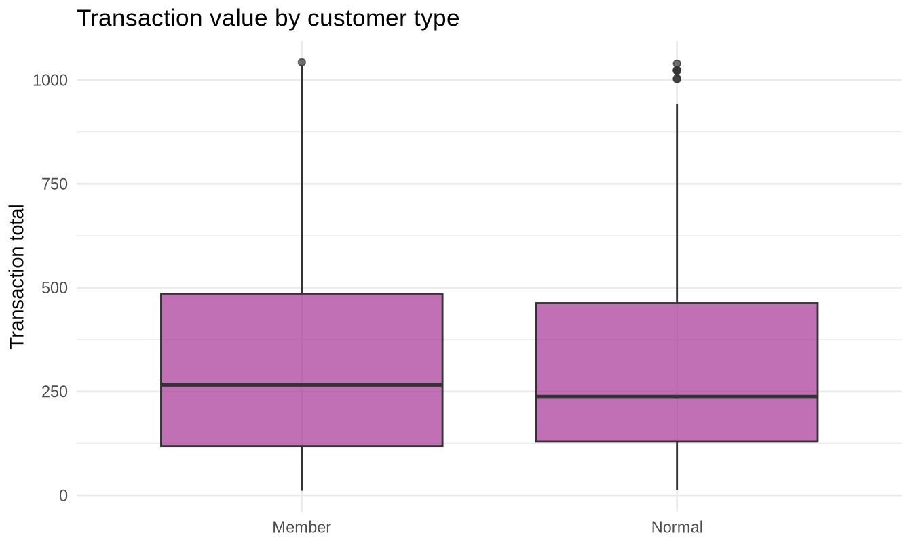
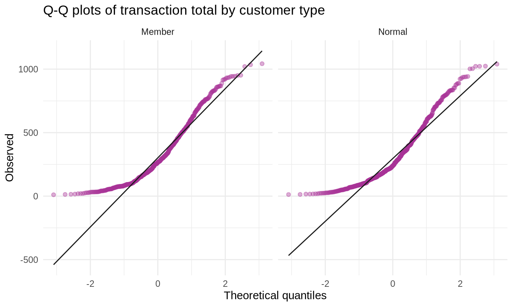
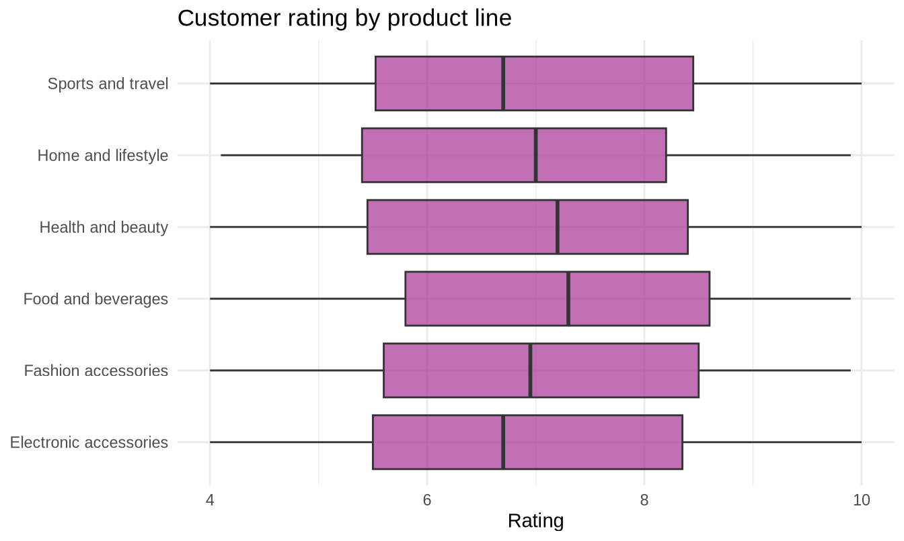
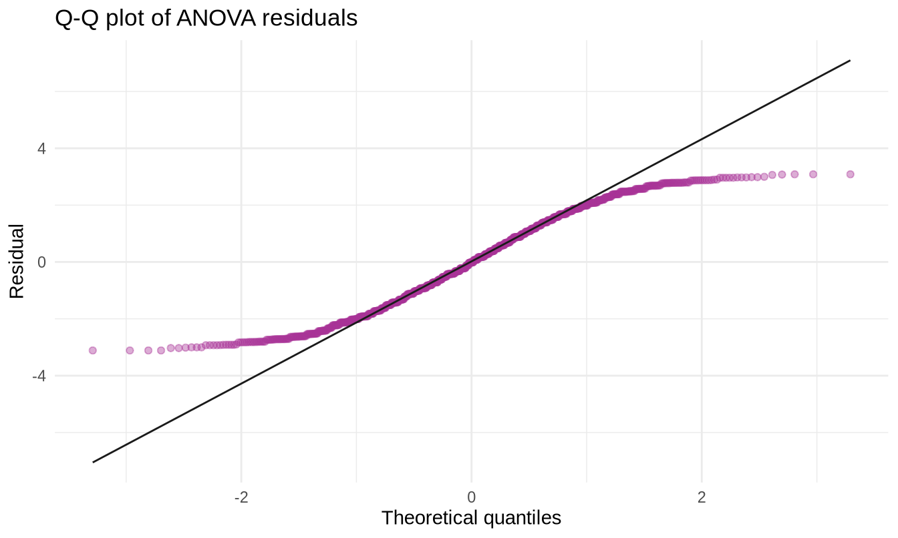

307102 Descriptive Statistics for Business | University of Petra
| Function | What it does | When you reach for it |
|---|---|---|
t.test() |
Compares a mean to a value, or two means | “Do members spend more than non-members?” |
aov() |
Compares three or more means | “Do the six product lines differ in rating?” |
TukeyHSD() |
Says which groups differ, after aov() |
“Fine - but which two?” |
chisq.test() |
Tests association between two categorical variables | “Do branches differ in payment method?” |
shapiro.test(), leveneTest() |
Check the assumptions before you trust the test | Always |
cohens_d(), eta_squared() |
Effect size - is the difference big enough to care? | Always |
By the end of this notebook you will be able to:
Section 3.2 estimated values. This section tests claims.
The reasoning is deliberately backwards, and that is what makes it hard at first.
The argument, in four steps
It is proof by contradiction with a probability attached. You never prove the alternative; you only show the null is an uncomfortable place to stand.
| Hypothesis | Symbol | What it says | Example |
|---|---|---|---|
| Null | H0 | No effect, no difference, no association | Members and non-members spend the same |
| Alternative | H1 | There is an effect | They do not spend the same |
Two rules students break constantly:
The p-value is the probability of getting data at least as extreme as yours, if the null hypothesis were true.
What a p-value is NOT
It is not the probability the null hypothesis is true.
It is not the probability your result happened by chance.
It is not a measure of how large or important the effect is.
A p-value is a statement about data given a hypothesis, never about a hypothesis given data. Reversing those two is the most common error in applied statistics, and it appears in published research constantly.
By convention, p < 0.05 counts as evidence against the null. That threshold, called alpha, is arbitrary - it was a suggestion by Ronald Fisher in the 1920s, not a law of nature. A p-value of 0.049 and one of 0.051 mean essentially the same thing.
| H0 is actually true | H0 is actually false | |
|---|---|---|
| You reject H0 | Type I error (false alarm) | Correct |
| You fail to reject H0 | Correct | Type II error (missed it) |
Setting alpha to 0.05 means accepting a 5 percent Type I error rate. Lowering it to 0.01 reduces false alarms but increases missed real effects. You cannot minimise both at once, so the right threshold depends on which mistake is more costly in context - a question statistics cannot answer for you.
The question: management claims the average transaction is 300. Our sample says otherwise. Is the difference real?
#>
#> One Sample t-test
#>
#> data: sales$Total
#> t = 2.9537, df = 999, p-value = 0.003213
#> alternative hypothesis: true mean is not equal to 300
#> 95 percent confidence interval:
#> 307.7084 338.2251
#> sample estimates:
#> mean of x
#> 322.9667Reading that output:
| Line | Meaning |
|---|---|
t = ... |
The test statistic: how many standard errors the sample mean sits from 300 |
df = 999 |
Degrees of freedom, n - 1 |
p-value |
Probability of a result this extreme if the true mean really were 300 |
95 percent confidence interval |
The plausible range for the true mean |
mean of x |
Our sample mean |
The conclusion in business language. The interval does not contain 300 and the p-value is small, so the average transaction value is higher than management’s figure. Note that the confidence interval and the test always agree: if the interval excludes the null value, the test rejects it. They are two views of the same calculation.
If you only care about one direction, say so:
#>
#> One Sample t-test
#>
#> data: sales$Total
#> t = 2.9537, df = 999, p-value = 0.001607
#> alternative hypothesis: true mean is greater than 300
#> 95 percent confidence interval:
#> 310.1652 Inf
#> sample estimates:
#> mean of x
#> 322.9667Decide the direction before you look
A one-tailed test has more power to detect an effect in the direction you specified - but you must choose that direction before seeing the data.
Running a two-tailed test, noticing the result points one way, and then switching to one-tailed to halve the p-value is a form of cheating with a name: p-hacking. It roughly doubles your false positive rate.
The question: do members spend more than non-members?
#> # A tibble: 2 × 4
#> `Customer type` n mean_spend sd_spend
#> <chr> <int> <dbl> <dbl>
#> 1 Member 501 328. 248.
#> 2 Normal 499 318. 244.Always look before you test.

#>
#> Welch Two Sample t-test
#>
#> data: Total by Customer type
#> t = 0.62155, df = 997.84, p-value = 0.5344
#> alternative hypothesis: true difference in means between group Member and group Normal is not equal to 0
#> 95 percent confidence interval:
#> -20.85669 40.19359
#> sample estimates:
#> mean in group Member mean in group Normal
#> 327.7913 318.1229The formula Total ~ \Customer type`reads as "Total **broken down by** customer type". You will see this~` notation constantly from here on.
R runs Welch’s t-test by default, which does not assume the two groups have equal variances. This is the right default and you should almost always keep it.
When the two measurements come from the same unit - before and after, left and right, same customer twice - the samples are not independent and you must say so.
#>
#> Paired t-test
#>
#> data: before and after
#> t = -2.9035, df = 29, p-value = 0.006985
#> alternative hypothesis: true mean difference is not equal to 0
#> 95 percent confidence interval:
#> -0.6429737 -0.1115148
#> sample estimates:
#> mean difference
#> -0.3772443#>
#> Welch Two Sample t-test
#>
#> data: before and after
#> t = -1.0138, df = 57.51, p-value = 0.3149
#> alternative hypothesis: true difference in means is not equal to 0
#> 95 percent confidence interval:
#> -1.1222407 0.3677521
#> sample estimates:
#> mean of x mean of y
#> 6.543534 6.920779Compare the two p-values. The paired test is far more sensitive, because it removes the variation between customers and looks only at the change within each one.
The pairing question
Ask: could I shuffle one group without losing information?
If each value in group A is meaningfully tied to a specific value in group B, the test is paired. Getting this wrong throws away real statistical power - or invents power you do not have.
Every test has conditions. Reporting a p-value from a test whose assumptions fail is reporting a number that does not mean what you say it means.
The t-test assumes:
#>
#> Shapiro-Wilk normality test
#>
#> data: member_spend
#> W = 0.91243, p-value < 2.2e-16Shapiro-Wilk tests H0: the data is normal. A small p-value means reject normality.
The paradox of normality tests
With a large sample, a normality test rejects almost everything. Real data is never exactly normal, and with 500 observations even trivial departures become “statistically significant”.
So a significant Shapiro-Wilk on a large sample tells you very little. Look at a Q-Q plot instead and ask whether the departure is big enough to matter.

Both groups curve upward at the right - the right skew you found in section 2. With roughly 500 observations per group, the Central Limit Theorem makes the t-test robust to this. The skew would be a genuine problem at n = 15.
#> Levene's Test for Homogeneity of Variance (center = median)
#> Df F value Pr(>F)
#> group 1 0.338 0.5611
#> 998Levene’s test has H0: the variances are equal. A large p-value means no evidence against equality.
Since we are using Welch’s test, which does not assume equal variances anyway, this is informational rather than decisive.
A p-value tells you whether an effect exists. It says nothing about whether it matters.
Why this section exists
With a large enough sample, any difference becomes statistically significant - including differences far too small to act on.
A test can tell you a branch’s average sale is genuinely 2 dinars higher. Only you can decide 2 dinars is not worth a strategy.
#> Cohen's d | 95% CI
#> -------------------------
#> 0.04 | [-0.08, 0.16]
#>
#> - Estimated using pooled SD.Cohen’s d expresses the difference between two means in standard deviations - the same idea as a z-score, applied to a gap between groups.
| Cohen’s d | Conventional label |
|---|---|
| 0.2 | Small |
| 0.5 | Medium |
| 0.8 | Large |
These labels are conventions, not laws. In a context where a tiny effect is enormously valuable - a 0.1 percent improvement in conversion on millions of visits - a “small” effect can be worth a great deal.
set.seed(2024)
# A deliberately trivial difference: 0.02 of a standard deviation
demo_test <- function(n) {
a <- rnorm(n, mean = 100, sd = 15)
b <- rnorm(n, mean = 100.3, sd = 15)
tibble(
n = n,
p_value = round(t.test(a, b)$p.value, 4),
cohens_d = round(as.numeric(cohens_d(a, b)$Cohens_d), 4)
)
}
map_dfr(c(50, 500, 5000, 50000), demo_test)#> # A tibble: 4 × 3
#> n p_value cohens_d
#> <dbl> <dbl> <dbl>
#> 1 50 0.995 -0.0013
#> 2 500 0.196 0.0818
#> 3 5000 0.595 0.0106
#> 4 50000 0.151 -0.0091The effect size stays trivially small at every sample size. The p-value marches steadily towards zero.
This is the single most important table in the notebook. It shows that “statistically significant” and “practically important” are different questions, and that only one of them is answered by a p-value.
Always report both.
The question: do the six product lines differ in customer rating?
You might think to run all 15 pairwise t-tests. Do not. Each test has a 5 percent false positive rate, so across 15 tests the chance of at least one false alarm is about 54 percent.
#> [1] 0.537ANOVA asks the question once: are all the group means equal?
#> # A tibble: 6 × 4
#> `Product line` n mean_rating sd_rating
#> <chr> <int> <dbl> <dbl>
#> 1 Food and beverages 174 7.11 1.72
#> 2 Fashion accessories 178 7.03 1.71
#> 3 Health and beauty 152 7.00 1.76
#> 4 Electronic accessories 170 6.92 1.70
#> 5 Sports and travel 166 6.92 1.71
#> 6 Home and lifestyle 160 6.84 1.72
Give the column a name without a space first
Backticks work fine in aov() itself, but some of the functions you run afterwards - TukeyHSD() in particular - cannot cope with a column name containing a space, and fail with the unhelpful message undefined columns selected.
The fix takes one line: make a copy of the column with a simple name before you model it. Do this whenever you are about to fit a model on a column whose name has a space.
#> Df Sum Sq Mean Sq F value Pr(>F)
#> product_line 5 8 1.598 0.54 0.746
#> Residuals 994 2943 2.960Reading the ANOVA table:
| Column | Meaning |
|---|---|
Df |
Degrees of freedom: groups minus 1, then the remainder |
Sum Sq |
Variation between groups, then within groups |
Mean Sq |
Sum of squares divided by degrees of freedom |
F value |
Between-group variation divided by within-group variation |
Pr(>F) |
The p-value |
The intuition behind F: if the groups genuinely differ, the variation between group means should be large relative to the variation within groups. F near 1 means the groups are no more different from each other than random members of the same group.
#> # Effect Size for ANOVA
#>
#> Parameter | Eta2 | 95% CI
#> --------------------------------------
#> product_line | 2.71e-03 | [0.00, 1.00]
#>
#> - One-sided CIs: upper bound fixed at [1.00].Eta-squared is the proportion of variation in the outcome explained by the grouping. Read a value of 0.01 as “product line explains 1 percent of the variation in ratings”, which leaves 99 percent explained by something else.
ANOVA says whether the groups differ, not which ones. For that you need a post-hoc test that corrects for multiple comparisons.
#> Tukey multiple comparisons of means
#> 95% family-wise confidence level
#>
#> Fit: aov(formula = Rating ~ product_line, data = sales_anova)
#>
#> $product_line
#> diff lwr upr
#> Fashion accessories-Electronic accessories 0.104507601 -0.4223276 0.6313428
#> Food and beverages-Electronic accessories 0.188512508 -0.3412726 0.7182976
#> Health and beauty-Electronic accessories 0.078583591 -0.4698213 0.6269885
#> Home and lifestyle-Electronic accessories -0.087205882 -0.6283241 0.4539123
#> Sports and travel-Electronic accessories -0.008440822 -0.5444976 0.5276159
#> Food and beverages-Fashion accessories 0.084004908 -0.4397237 0.6077336
#> Health and beauty-Fashion accessories -0.025924009 -0.5684803 0.5166323
#> Home and lifestyle-Fashion accessories -0.191713483 -0.7269035 0.3434765
#> Sports and travel-Fashion accessories -0.112948423 -0.6430203 0.4171235
#> Health and beauty-Food and beverages -0.109928917 -0.6553501 0.4354923
#> Home and lifestyle-Food and beverages -0.275718391 -0.8138125 0.2623757
#> Sports and travel-Food and beverages -0.196953331 -0.7299573 0.3360506
#> Home and lifestyle-Health and beauty -0.165789474 -0.7222254 0.3906464
#> Sports and travel-Health and beauty -0.087024413 -0.6385394 0.4644906
#> Sports and travel-Home and lifestyle 0.078765060 -0.4655049 0.6230350
#> p adj
#> Fashion accessories-Electronic accessories 0.9931366
#> Food and beverages-Electronic accessories 0.9126782
#> Health and beauty-Electronic accessories 0.9985315
#> Home and lifestyle-Electronic accessories 0.9974214
#> Sports and travel-Electronic accessories 1.0000000
#> Food and beverages-Fashion accessories 0.9974789
#> Health and beauty-Fashion accessories 0.9999934
#> Home and lifestyle-Fashion accessories 0.9103561
#> Sports and travel-Fashion accessories 0.9904450
#> Health and beauty-Food and beverages 0.9926104
#> Home and lifestyle-Food and beverages 0.6879939
#> Sports and travel-Food and beverages 0.8988551
#> Home and lifestyle-Health and beauty 0.9577532
#> Sports and travel-Health and beauty 0.9976685
#> Sports and travel-Home and lifestyle 0.9984600Tukey’s HSD compares every pair while holding the overall false positive rate at 5 percent. Read the p adj column - the adjusted p-value - and the confidence interval for each difference. Any interval containing zero means that pair is not distinguishable.
#> Levene's Test for Homogeneity of Variance (center = median)
#> Df F value Pr(>F)
#> group 5 0.3221 0.8999
#> 994
ANOVA assumes independent observations, roughly normal residuals, and roughly equal variances across groups. With group sizes over 150 it is fairly robust to moderate departures.
Everything so far compared means. The chi-square test works with counts, and asks whether two categorical variables are associated.
The question: do the three branches differ in how customers pay?
#>
#> Cash Credit card Ewallet
#> A 110 104 126
#> B 110 109 113
#> C 124 98 106#>
#> Cash Credit card Ewallet
#> A 117.0 105.7 117.3
#> B 114.2 103.3 114.5
#> C 112.8 102.0 113.2#>
#> Cash Credit card Ewallet
#> A -0.64 -0.17 0.80
#> B -0.39 0.57 -0.14
#> C 1.05 -0.40 -0.67The residuals show which cells drive the result. Values beyond about +2 or -2 mark cells where the observed count differs notably from what independence predicts. This turns a single p-value into an actual finding you can describe.
The chi-square assumption
Chi-square needs expected counts of at least 5 in each cell - check chi_result$expected, not the observed table.
If some cells are too small, either combine categories or use fisher.test() instead.
A different chi-square question: does one categorical variable match an expected distribution?
#>
#> Chi-squared test for given probabilities
#>
#> data: table(sales$Branch)
#> X-squared = 0.224, df = 2, p-value = 0.894By default this tests whether all categories are equally likely.
| Your question | Data type | Test |
|---|---|---|
| Is this mean different from a fixed value? | One numeric variable | t.test(x, mu = value) |
| Do two independent groups differ? | Numeric outcome, 2 groups | t.test(y ~ group) |
| Did the same units change? | Numeric, measured twice | t.test(a, b, paired = TRUE) |
| Do three or more groups differ? | Numeric outcome, 3+ groups | aov(y ~ group) |
| Which specific groups differ? | After a significant ANOVA | TukeyHSD() |
| Are two categorical variables associated? | Two categorical variables | chisq.test(table(a, b)) |
| Does one categorical variable match expectations? | One categorical variable | chisq.test(table(a)) |
Self-check
A manager runs 20 separate tests looking for anything that differs between branches. One comes back with p = 0.04. He announces a finding. What is wrong?
Show the answer
With 20 tests at alpha = 0.05, the expected number of false positives when nothing is going on at all is exactly one.
There was roughly a 64 percent chance of finding at least one “significant” result even if every branch were identical. Finding exactly one at p = 0.04 is precisely what pure noise looks like.
This is the multiple comparisons problem, and it is why ANOVA exists rather than running every pairwise t-test.
What should he do? Either correct for the number of tests - p.adjust() does this - or treat the finding as a hypothesis to test on fresh data rather than a conclusion. The second is almost always better science.
Exercise 1 - One-sample. Management claims average customer satisfaction is 7.0 out of 10. Test this claim. State your hypotheses, run the test, and write a one-sentence conclusion in business language.
Exercise 2 - Two-sample with assumptions and effect size. Do male and female customers spend different amounts? Explore first with a table and a boxplot, check assumptions, run the test, report Cohen’s d, and state whether the result is both statistically significant and practically important.
Exercise 3 - ANOVA. Does average transaction value differ across the three branches? Run the ANOVA, report eta-squared, and if the result is significant, run TukeyHSD() to identify which pairs differ.
Exercise 4 - Chi-square. Is there an association between Customer type and Product line? Build the table, check the expected counts, run the test, and examine the residuals to say where any association comes from.
Exercise 5 - Choose and defend. For each question, name the test and justify it in one sentence:
Solutions are in 3.3-Hypothesis-Testing-SOLUTIONS.Rmd.
| Code | What it does |
|---|---|
t.test(x, mu = 300) |
One-sample t-test |
t.test(x, mu = 300, alternative = "greater") |
One-tailed |
t.test(y ~ group, data = d) |
Independent two-sample (Welch) |
t.test(a, b, paired = TRUE) |
Paired t-test |
aov(y ~ group, data = d) |
One-way ANOVA |
summary(model) |
The ANOVA table |
TukeyHSD(model) |
Post-hoc pairwise comparisons |
chisq.test(table(a, b)) |
Test of independence |
chisq.test(table(a)) |
Goodness of fit |
result$expected, result$residuals |
Diagnose a chi-square result |
shapiro.test(x) |
Normality test |
leveneTest(y ~ factor(g), data = d) |
Equal variance test |
cohens_d(y ~ group, data = d) |
Effect size for two means |
eta_squared(aov_model) |
Effect size for ANOVA |
p.adjust(pvals, method = "holm") |
Correct for multiple tests |
Next: section 3.4, where instead of comparing groups you model a relationship and use it to predict.
Work through the exercises in the notebook version of this section before the next lecture.
307102 · Section 3.3 · Hypothesis Testing · University of Petra